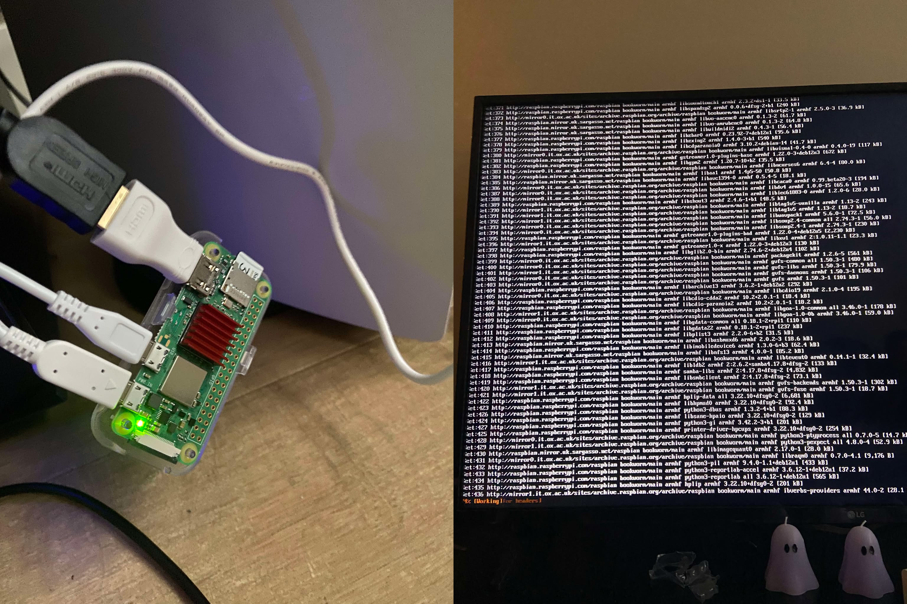

In this presentation, I will be demonstrating how I use tools like nmap, ftp and gobuster to exploit a website's vulnerabilities and gain administrator access.
In this project I will demonstrate how I will install an application (Suricata) in this case in a Linux distribution.

Set up Pi-hole on a Raspberry Pi to block ads across the whole network. Added extra security with encrypted DNS, SSH tweaks, Fail2Ban, and a firewall to keep it safe.
For this project, I simulate a Ransomware attack using a Python script to encrypt all files within a directory and provide a key to decrypt after payment is transfered.
A Python Tkinter utility app with a password generator, image grabber from URLs, and a website pinger to check site availability.
In this project, I was tasked to obtain information on employee devices because my team needs to update them.
My first completed game I've developed, it's a platform shooter. It has many quirks such as multiple endings, special effects for all kinds of animations and bosses.
In this presentation, I will demonstrating how I exploit a misconfigured Redis server and get remote access.
In this project, I was tasked to explore the permissions of the
"projects" directory and the files it contains, I will be showcasing
my ability to change permissions of set files, display hidden files
and my understanding of the "drwxrwxrwx" file permissions.
A self-hosted web platform integrated with a MariaDB database running on my Raspberry Pi. The system enables user authentication, media uploads, and deletions, with secure routing between the Pi and a Windows machine. Built using Python (Flask), SQL, and a web front-end, it demonstrates remote database management and full-stack development skills.